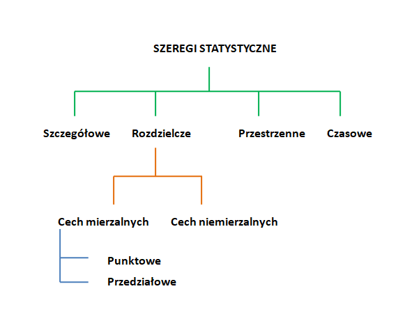
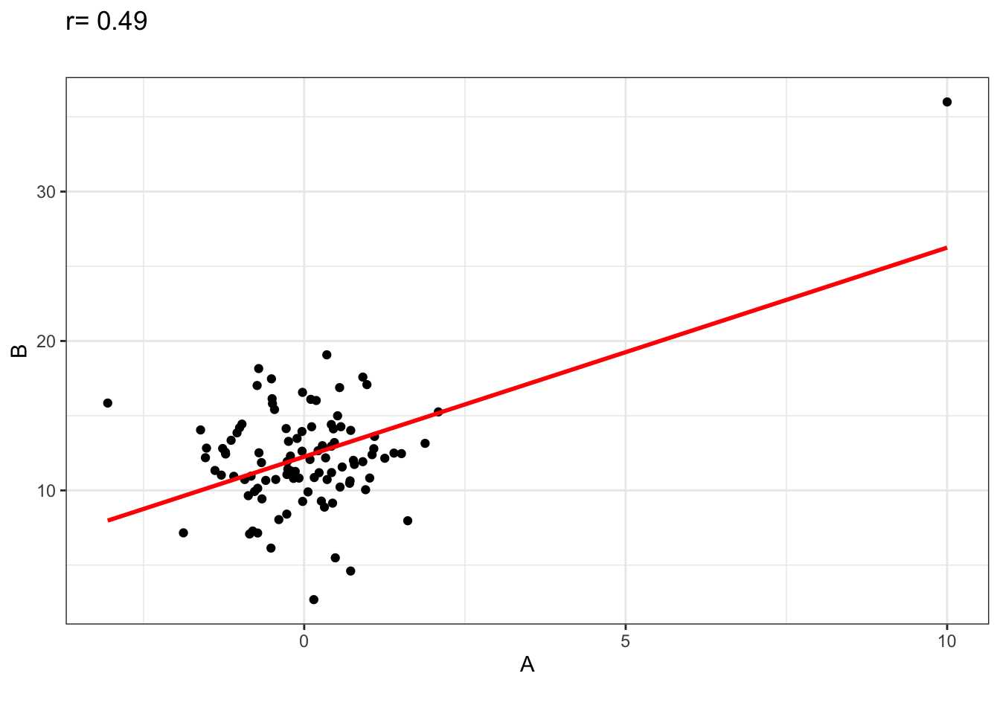
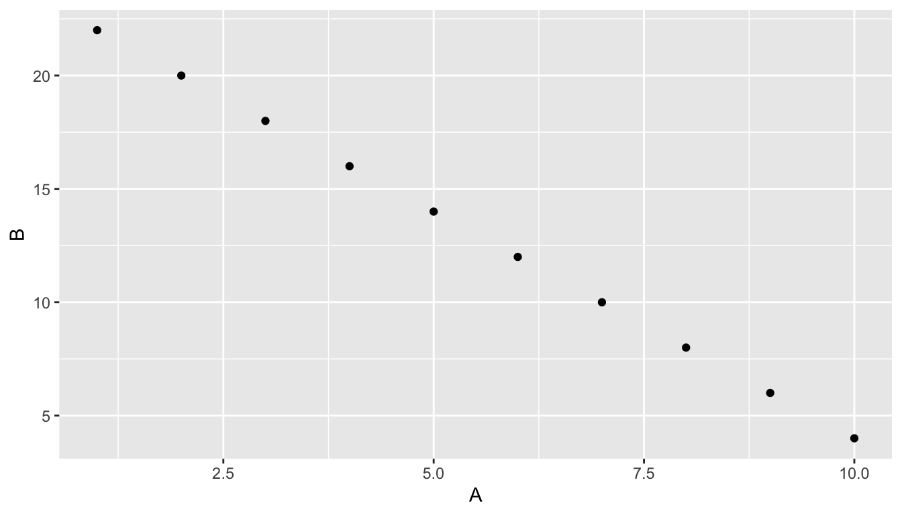

3 Szereg rozdzielczy przedziałowy
Zanim rozpoczniemy zmagania z szeregiem rozdzielczym przedziałowym, zamieszczam krótkie graficzne podsumowanie typów/rodzajów szeregów statystycznych przygotowane przez Michała Kitowskiego 
3.1 Wprowadzenie
Praca na szeregu szczegółowym jest z reguły utrudniona, ze względu na liczebność próby. Tak długo, dopóki pracujemy na stosunkowo niewielkich próbach możliwe są obliczenia “ręczne”, jednak dla prób większych (o ile nie posługujemy się oprogramowaniem np.: Excell, R, itp.) lepiej posłużyć sie szeregiem rozdzielczym przedziałowym.
Każdy szereg szczegółowy można przekształcić w szereg rozdzielczy. Dokonując podziału zakresu zmienności naszej zmiennej na przedziały i określając liczebność przypadków w poszczególnych przedziałach.
Imaginujmy sobie, że pracujemy na zbiorze o liczebności \(n=200\) dotyczącym zmiennej \(A\).
## [1] 3.82 2.06 4.60 9.60 3.18 -0.19 8.32 3.10 1.95 5.35 4.74
## [12] 5.57 4.96 6.16 6.07 3.91 2.33 4.57 3.14 5.61 4.25 4.16
## [23] 2.48 2.78 3.91 1.73 4.28 5.87 5.33 0.37 3.78 7.90 3.24
## [34] 7.77 4.29 2.60 5.71 2.59 3.45 1.32 3.60 2.85 2.03 2.69
## [45] 2.26 6.47 3.38 1.82 4.16 7.47 1.61 5.45 2.23 1.63 3.77
## [56] 5.19 3.81 3.42 2.90 3.97 4.93 3.02 5.81 4.17 3.06 3.61
## [67] 3.39 3.23 4.70 3.47 5.17 4.72 0.77 6.25 4.64 2.91 6.78
## [78] 0.55 7.04 4.87 8.49 6.67 5.21 5.90 5.56 4.75 -0.22 3.12
## [89] 6.49 6.52 3.22 6.77 2.86 2.06 7.26 3.58 2.18 2.96 4.87
## [100] 3.49 0.90 6.42 3.43 4.08 -0.20 2.62 2.39 6.48 4.56 4.49
## [111] 1.95 4.84 4.93 4.45 6.22 1.95 8.58 8.54 6.16 2.29 1.40
## [122] 5.74 6.03 5.01 2.08 6.51 3.56 7.07 1.18 5.79 3.41 2.77
## [133] 4.15 5.08 5.14 6.06 2.92 2.65 4.00 3.33 3.42 -1.25 4.34
## [144] 8.32 7.44 5.71 6.78 1.61 4.20 2.88 2.49 4.71 6.71 1.44
## [155] 4.49 5.65 5.55 1.69 0.42 3.88 6.86 4.61 4.08 3.39 4.71
## [166] 3.31 4.46 4.27 4.84 3.33 4.90 1.59 4.79 3.97 3.09 3.63
## [177] 3.26 3.70 3.15 8.62 6.22 4.52 1.72 6.05 7.67 2.14 1.94
## [188] 8.54 -0.83 1.85 7.53 3.82 8.07 3.53 5.61 4.32 0.16 2.34
## [199] 6.96 1.74Obliczenia wartości średniej (wynoszącej w tym wypadku 4.15), nie wspominając o wariancji, odchyleniu standardowym czy też miarach skośności lub kurtozy byłyby w tym wypadku, delikatnie mówiąc, męczące. Ale można dokonac podziału tego zbioru na przedziały a wówczas obliczenia te staną się zdecydowanie mniej absorbujące.
Liczba przedziałów powinna być dobrana z głową. W podręcznikach statystyki można dopatrzyć się przynajmniej kilku metod określania liczby przedziałów. Osobiście preferuję najprostszą z nich czyli \(\sqrt{n}\), gdzie \(n\) to liczebność próby. Tak więc w naszym przypadku liczba przedziałów to 14.1421356.
Nie należy się oczywiście zbytnio przywiązywać do liczb po przecinku… załóżmy więc, ze w naszym przypadku optymalna liczba przedziałów to 14 lub 15. Kolejnym krokiem jest określenie granic tych przedziałów i tutaj pomoże nam miara rozproszenia nazywaną rozrzutem lub rozstępem, czyli różnica między maksimum a minimum. Minimum i maksimum to odpowiednio -1.25, 9.6. A rozstęp wynosi 10.85. Czyli musimy tą wartości podzielic na np 14 (liczba przedziałów) - efekt: 0.775.
Wynik jest mocno niepraktyczny. I właśnie w tym momencie nalezy użyć wspomnianej wcześniej głowy. Osobiście sprawdziłbym jeszcze ile wynosi wartość rozstępu podzielona przez 15 - 0.7233333 i krakowskim targiem uznałbym że rozpiętość przedziału, ktorej szukamy to 0.75 (pamiętajcie, że później nasza tabela przedstawiająca szereg rozdzielczy przedziałowy powinna sensownie się prezentować - czyli granice przedziałów powinny mieć wartości mniej więcej okrągłe).
Kolejnym zagadnieniem, jest początek. Teoretycznie powinno się zacząć od minimum ale z punktu widzenia tworzenia przedziałów jest to niepraktyczne. W tym konkretnym wypadku sugeruję zacząc od -1.5 i dodawać kolejno 0.7. Czyli granice naszych przedziałów to odpowiednio -1.5, -0.75, 0, 0.75, 1.5, 2.25, 3, 3.75, 4.5, 5.25, 6, 6.75, 7.5, 8.25, 9, 9.75. Pamiętajcie, że o ile nie jest to sprecyzowane inaczej to przedziały są zawsze prawostronnie domknięte.
Teraz pozostaje już tylko zliczyć liczbę wartośći w poszczególnych przedziałach i przedstawić ją jako szereg rozdzielczy.
| Przedział | \(n_i\) |
|---|---|
| (-1.5,-0.75] | 2 |
| (-0.75,0] | 3 |
| (0,0.75] | 4 |
| (0.75,1.5] | 6 |
| (1.5,2.25] | 21 |
| (2.25,3] | 21 |
| (3,3.75] | 32 |
| (3.75,4.5] | 28 |
| (4.5,5.25] | 27 |
| (5.25,6] | 16 |
| (6,6.75] | 17 |
| (6.75,7.5] | 10 |
| (7.5,8.25] | 5 |
| (8.25,9] | 7 |
| (9,9.75] | 1 |
I tutaj kończy sie wstępna, nieco przydługa opowieść o tworzeniu szeregu rozdzielczego przedziałowego. Można ten szereg przedstawić za pomoca histogramu, obrazującego rozkład empiryczny naszej zmiennej \(A\)

Na osi Y można również przedstawić udzial poszczeŋolnych przedziałów w postaci odsetka.

Histogram nie musi mieć rozdziałów o takiej samej rozpiętości(liczy się w zasadzie pole powierzchni dla wersji z gęstością prawdopodibieństwa na osi Y), aczkolwiek takowe sa najczęściaj stosowane.
Wykorzystując przygotowany szereg rozdzielczy przedziałowy można dokonać wstępnej analizy danych z wykorzystaniem podstawowych miar statystycznych tzw. Eksploracyjnej Analizy Danych (Exploratory Data Analysis). Pozwoli nam ona na wstępne zorientowanie się, co w trawie piszczy (typ rozkładu, obecność braków danych, obserwacji odstających, skośność, itp.), zanim weźmiemy zamach z wykorzystaniem bardziej sążnistych metod statystycznych. W przypadku złego uwarunkowania danych źrodłowych, zamach taki skończy się wyrwaniem ręki ze stawu i kiepskimi rokowaniami na poprawę.
CAŁĄ ANALIZĘ TRZEBA NIESTETY WYKONAĆ OD POCZĄTKU.
3.2 Wybrane wzory
Średnia \[ \bar{x}=\frac{1}{n}\sum\limits_{1}^{k}x_in_i \] gdzie: \(x_i\) - środek przedziału \(n_i\) - liczebność przedziału
Dominanta \[ D=x_0+\frac{{n_0}-{n_{-1}}}{(n_0-n_{-1})+(n_0-n_{+1})}c_0 \] gdzie:
\(n_0\) - liczebność przedziału mody, \(n_{-1}\) - liczebność przedziału poprzedzającego przedział mody, \(n_{+1}\)- liczebność przedziału następującego po przedziale mody, \(x_0\) - dolna granica przedziału najliczniejszego, \(c_0\) - rozpiętość przedziału najliczniejszego
Mediana \[ Me=x_0+[0,5(n+1)-N_{x_{i-1}}]\frac{c_0}{n_0} \] gdzie:
\(x_0\) – dolna granica przedziału mediany, \(n_0\) – liczebność przedziału mediany, \(c_0\) – rozpiętość przedziału mediany, \(N_{x_{i-1}}\) – liczebność szeregu skumulowanego do przedziału poprzedzającego ten, zawierający medianę
Kwartyl 1 & 3 (oznaczenia symboli analogicznie do \(Me\))
\[ Q1=x_0+[0,25(n+1)-N_{x_{i-1}}]\frac{c_0}{n_0} \] \[ Q3=x_0+[0,75(n+1)-N_{x_{i-1}}]\frac{c_0}{n_0} \]
3.2.1 Miary dyspersji (klasyczne)
Odchylenie standardowe \[ s=\sqrt{\frac{\sum\limits_{i=1}^{n} (x_i-\bar{x})^2n_i}{n-1}} \]
Odchylenie przeciętne \[ d=\frac{\sum\limits_{i=1}^{k}\left| x_i-\bar{x}\right|n_i}{n} \]
Współczynnik zmienności \[ V(d)=\frac{d}{\bar{x}}100 \]
3.2.2 Miary dyspersji (pozycyjne)
Rozstęp \[ R=x_{max}-x_{min} \]
Rozstęp decylowy \[ R(D) = D_9-D_1 \]
Rozstęp kwartylowy (zwany również rozstępem międzykwartylowym) \[ R(Q) = Q_3-Q_1 \]
Odchylenie ćwiartkowe \[ Q = \frac{Q_3-Q_1}{2} \]
3.2.3 Miary asymetrii (klasyczne)
Asymetria & Moment 3-ci względny \[\mu_3=\frac{\sum\limits_{i=1}^{n} (x_i-\bar{x})^3n_i}{n}\] \[\alpha_3=\frac{\mu_3}{s^3}\]
Wartośći dodatnie oznaczają asymetrię dodatnią, natomiast ujemne… no wiadomo jaką.
Współczynnik asymetrii \[ A(\bar{x})=\frac{\bar{x}-D}{s} \]
3.2.4 Miary asymetrii (pozycyjne)
Współczynnik skośności (w oparciu o kwartyle) \[ A(Q)=\frac{(Q_3-Me)-(Me-Q_1)}{Q_3-Q_1}=\frac{(Q_3-Me)-(Me-Q_1)}{(Q_3-Me)+(Me-Q_1)} \]
Współczynnik skośności (w oparciu o decyle) \[ A(D)=\frac{(D_9-Me)-(Me-D_1)}{D_9-D_1}=\frac{(D_9-Me)-(Me-D_1)}{(D_9-Me)+(Me-D_1)} \]
3.2.5 Miary spłaszczenia
Nalezy bezwzględnie pamiętać, że spłaszczenie rozkładu jest w tym wypadku określane względem rozkładu normalnego. Rozkład mezokurtyczny ma takie spłaszczenie jak rozkład Gauss’a, rozkład platykurtyczny jest bardziej spłaszczony, natomiast leptokurtyczny bardziej szpiczasty. Wartości 4-tego momentu względnego > 0 oznaczają większą koncentrację wartości wokół średniej (rozkład jest bardziej szpiczasty - leptokurtyczny). \(\alpha_4<0\) wskazuje na spłaszczenie rokładu (platykurtyczny). Wartości w pobliżu 0 oznaczają rozkład mezokurtyczny o spłaszczeniu tożsamym z rozkładem wzorcowym - w tym wypadku rozkładem Gauss’a (normalnym).
Kurtoza & Moment 4-ty względny \[\mu_4=\frac{\sum\limits_{i=1}^{n} (x_i-\bar{x})^4n_i}{n}\] \[\alpha_4=\frac{\mu_4}{s^4}-3\]